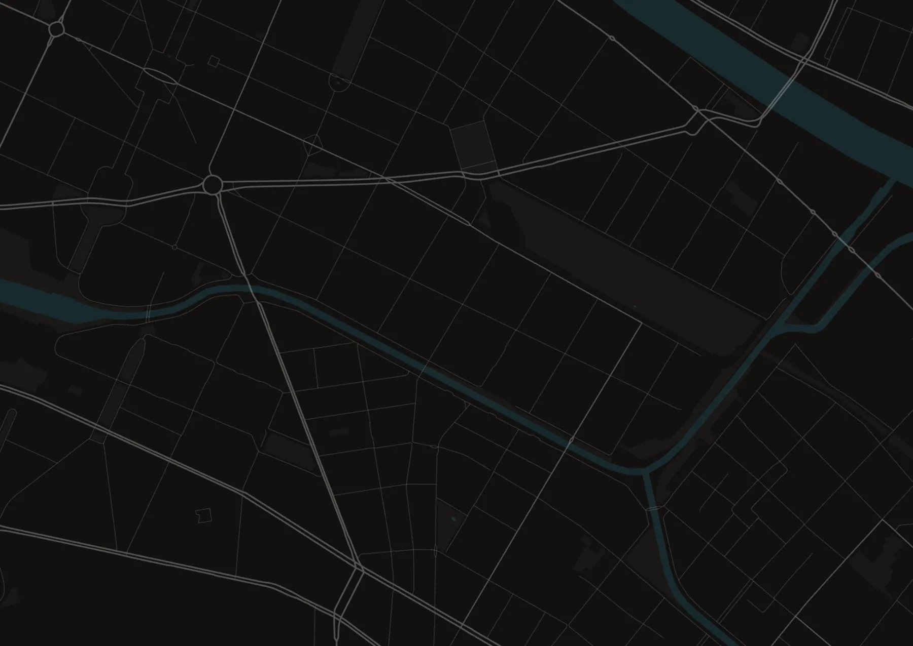
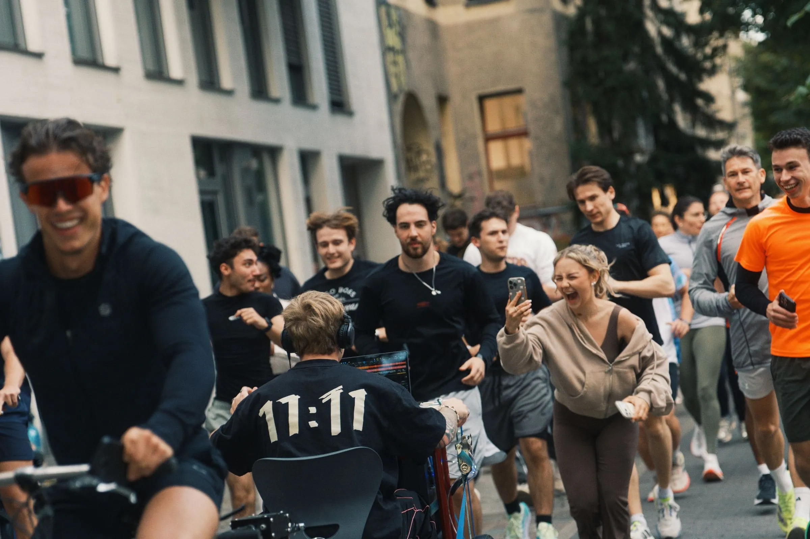
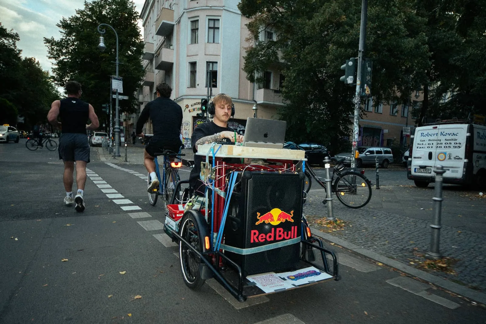

Project 01 · Berlin · 2026
Night Run
A run through Berlin at night – with a DJ, partners, food and drinks and an afterparty. Our first own event and the start of onside.hq.
- When
- 19 September 2026
- Where
- Berlin
- Route
- 8 km · 3 stops
- Partners
- Red Bull, HEJ Natural
- Our role
- Concept, organisation, partners, content
The idea
Running is the occasion.
The experience is the reason.
From the start, the Night Run was meant to be a night to remember: the city after dark, a DJ, shared stops and a finish line where the night goes on. A run where the time on the clock doesn’t matter and the feeling afterwards does.
The route
8 kilometres through Kreuzberg and Neukölln.

Map data: © OpenStreetMap contributors (ODbL)
- 18:30 Start at Ciao Ciao Bar
- 18:40 Myxa: cake and tea
- 19:05 Redrum Art Bar: mocktails
- 19:35 Dietrich Bar: alcohol-free spritz
- 20:00 Back to Ciao Ciao Bar, afterparty
The execution
From idea to starting gun in a few weeks.
In that time we built everything an event needs. Every step was in our hands – and that is how we want to keep working. From the first thought to the route, the partners and the run sheet, all the way to wristbands and radios on the night itself, we organised everything ourselves and produced the content along the way.
- Idea & concept
- Route & schedule
- Partners & sponsors
- Food & drinks
- DJ & afterparty
- On-site content
On board
Every partner had a role that matched their brand. That way the brands weren’t just on a banner but part of the night: Red Bull supplied the sound for the DJ bike, the bars became stations along the route. That is exactly how we think about partnerships for other events.
- Red Bull
Cans for everyone and the SoundBoks for the DJ bike.
- HEJ Natural
Protein bars for the road.

Station 1 with lemon and banana cake.

Station 2 with mocktails.

Station 3 with alcohol-free spritz and BRLO.
Behind the scenes
The moment and the plan behind it.
Drag the slider: on the left the night as everyone experienced it, on the right our planning behind it, step by step.
Night Run · 19 Sept 2026
- Idea: run, bars, DJ
- Route & timing set
- Bars signed up as stations
- DJ + Red Bull SoundBoks
- Run logo & sign-up form
- Wristbands & radios on site
- 18:30 starting gun

Photo: @jonaxlog · @bsti.s · DJ @ochser.wavThe content
The night as a reel.
Impressions
The night in pictures.

Photo: @jonaxlog · @bsti.s · DJ @ochser.wavYour project